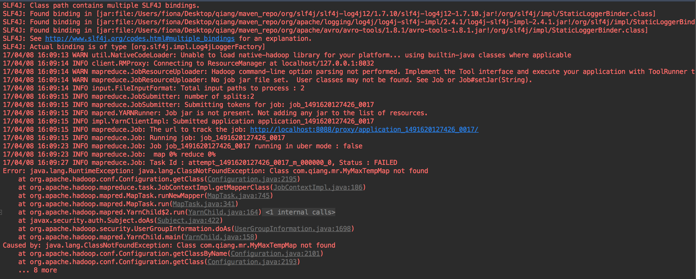

最近想看下hadoop job提交的源码，结果在mac使用伪分模式提交job时，导致job提交失败。主要遇到的问题有两个：
通过访问jobUI（localhost:8088），查看错误日志，可以看到一行错误信息：
1/bin/bash: /bin/java: No such file or directory原因：Hadoop默认检查/bin/java路径下的java（Linux环境下），可是Mac的Java不是装这里的，它的路径是/usr/bin/java。所以在这里可以建立一个软连接，通过sudo ln -s /usr/bin/java /bin/java。这时候会出现另一个问题， ln: /bin/java: Operation not permitted。也就是说没有权限，通过查找资料得知，这是苹果在OS X 10.11中引入的SIP特性，使得即使加了sudo（也就是具有root权限）也无法修改系统级的目录，其中就包括了/usr/bin，所以我们可以关闭rootless特性。
方法：重启按住 Command+R，进入恢复模式，打开Terminal，输入csrutil disable，如果要回复默认设置，也必须在恢复模式下，输入csrutil enable即可。
另一种是将本要链接到/usr/bin下的改链接到/usr/local/bin
2.运行时，控制台报错：
|
|
我的理解：因为自己之前看过hadoop提交job的运行架构和部分源码，一个job在提交的过程中，ResourceManager会将任务加入队列，会在NodeManager中形成container(容器)，每个job都会形成一个container,里面存放jar包等（job提交过程在这里简单提下），那么问题来了，这个报错是因为找不到类，并且控制台还输出 04/08 16:09:15 INFO mapred.YARNRunner: Job jar is not present. Not adding any jar to the list of resources，所以这里应该以提交jar包的形式运行，（在分布式和伪分布式模式下，jar包会分发到DataNode），而不是通过ide直接运行，所以为了让程序直接通过ide运行，将mapred-site.xml的配置项mapreduce.framework.name 改为lcoalhost(本地模式，之前报错的时候我配置的是yarn)即可。也就是说,开发工具,自动的把class 添加到了class path里，这样就能顺利执行了。
错误具体内容

注：我想复现一下第一个问题，把/bin/java链接删掉之后，发现问题并没有复现，但是，在出现这个问题的时候，通过增加链接，这个问题是确实可以解决的。在出现错误的时候，可以结合控制台和job的log进行定位问题。